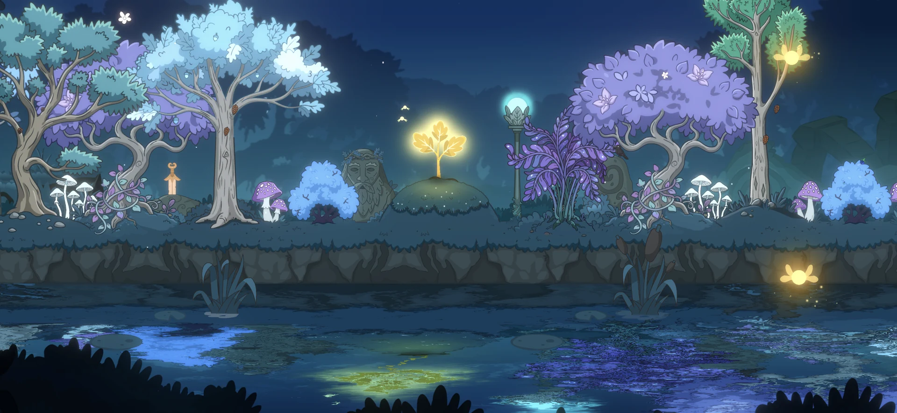

Щоденник розробки #7
Галчина Пошта: як оживають новини в Lumen Grove
Лісова газета, яку розносять галки: історії гаю, відгук на прогрес гравця та новий спосіб оживити світ Lumen Grove.


Зараз я працюю над останньою з фіч, які задумав ще на початку розробки Lumen Grove — затишної мобільної гри про відновлення чарівного лісу. Це Галчина Пошта — Jackdaw Post, власна газета лісу, яку розносять галки.
Від самого початку мені хотілося зробити систему повідомлень, яка органічно вписувалася б у світ гри. Вона мала дати мені, як розробнику, канал комунікації з гравцями й водночас створити відчуття, що ліс постійно перебуває у динаміці: десь щось відбувається, мешканці обговорюють зміни, новини ширяться між деревами, щоб не виникало відчуття що це просто декорація, не чергова ферма в іншій стилістиці.
В ідеалі, читаючи таку газету, має бути важко впізнати за її текстом повідомлення від розробника. Хочеться, щоб це було природньо ніби, як голос самого лісу, чи що.
Так з’явилася ідея галок, які тримають монополію на поширення лісових новин. Мені подобається цей образ: трохи кумедний, виразний, словом - достатній, щоб запам’ятатися й стати ще однією впізнаваною частиною Lumen Grove.
Чому саме галки?
Ворони, як у «Грі престолів», уже мають у цьому лісі іншу репутацію (хотілось перше додати їх на цю роль). Вони крадуть жолуді та світлячків, які можна повернути, переглянувши рекламу. Це теж, до речі, часитна мого підходу, щоб навіть рекламну механіку пов’язати зі світом гри, щоб бодай трохи зменшити відчуття виходу за його межі. А ще є історія (внутрішній лор) про Короля Воронів, де ці птахи також показані не з найкращого боку.
Тож для пошти мені потрібна була інша асоціація. Голуб здавався надто очевидним вибором і, на мій смак, надто світлим образом для цього темного лісу. Галки підійшли краще.
Про що писатиме Jackdaw Post
Завдяки сервісам Unity я зможу додавати новини без випуску оновлення гри через Google Play. Це дає можливість поступово наповнювати газету новими історіями й реагувати на те, що відбувається у світі Lumen Grove.
Також плануються заздалегідь підготовлені матеріали, пов’язані з прогресом у гаю. Дуб підріс? Так то є привід для новини. Значну частину проклятого каміння прибрано? Місцева редакція навряд чи залишить таку подію без уваги.
Для мене це ще один спосіб задовольнити своє бажання створювати живий світ. Для гравців — можливість побачити, як ліс відгукується на зміни, почитати його історії та отримати додаткові винагороди. Звучить як він-він стратегія.
Системні повідомлення, зокрема анонси івентів та оновлень, уже мають окремий канал: спливні вікна на початку гри. Галчина Пошта матиме свою роль — розповідати про життя лісу зсередини.
Що далі в розробці Галчиної Пошти
Фіча ще в розпалі розробки. Попереду — перевірка того, чи працює цей формат так, як він уявлявся. За допомогою аналітики я планую досліджувати, як гравці взаємодіють із газетою: чи відкривають матеріали, скільки часу проводять за читанням і чи повертаються до неї.
Цю статтю я оновлюватиму в міру розробки Галчиної Пошти. Тож - на зв’язку!
Lumen Grove доступна на Android у Google Play.